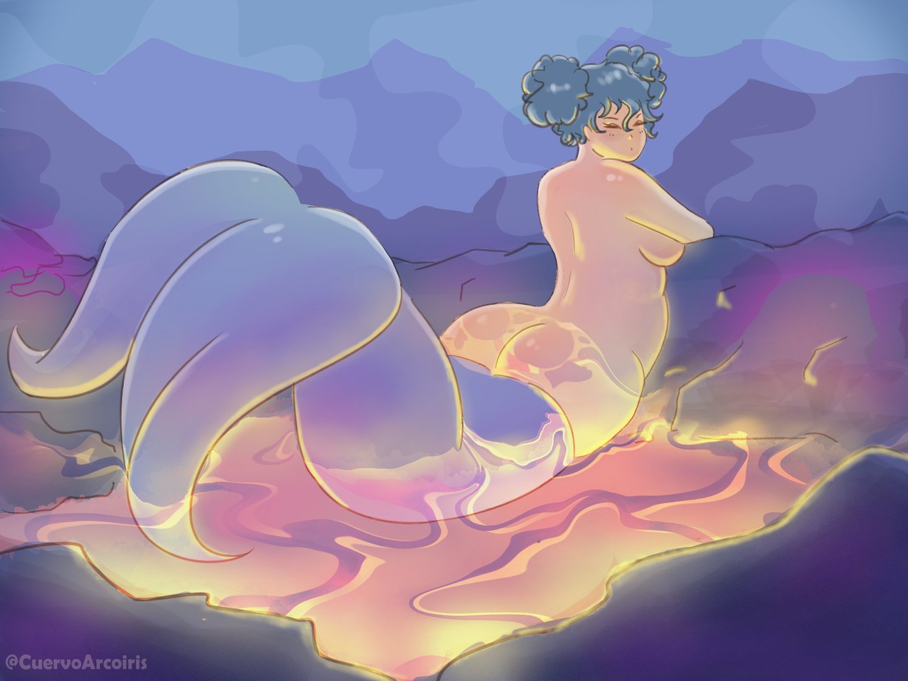

Aguas termales
Una sirena que descansa en un lugar donde normalmente no vivirían: un río de lava que ilumina toda la escena.
Sobre la ilustración
Esta obra busca retratar la sensualidad y belleza de una mujer convirtiendose en sirena
La idea fue mezclar dos elementos opuestos, el agua y el fuego, en una imagen que se siente tranquila y no peligrosa. Las montañas de fondo se dejaron suaves para que la lava sea el centro.
Técnica usada
Se trabajó como una pintura digital suave, donde la luz es lo principal. Se usaron estas ideas:
- La lava como fuente de luz, con formas fluidas en degradados de amarillo, naranja y rosa.
- Una cola con transparencias y pequeños brillos blancos para que parezca gelatina o vidrio.
- Una línea de luz amarilla en los bordes del cuerpo y de las rocas, que muestra de dónde viene el calor.
- Montañas hechas con manchas planas en capas de azul y morado para dar distancia.